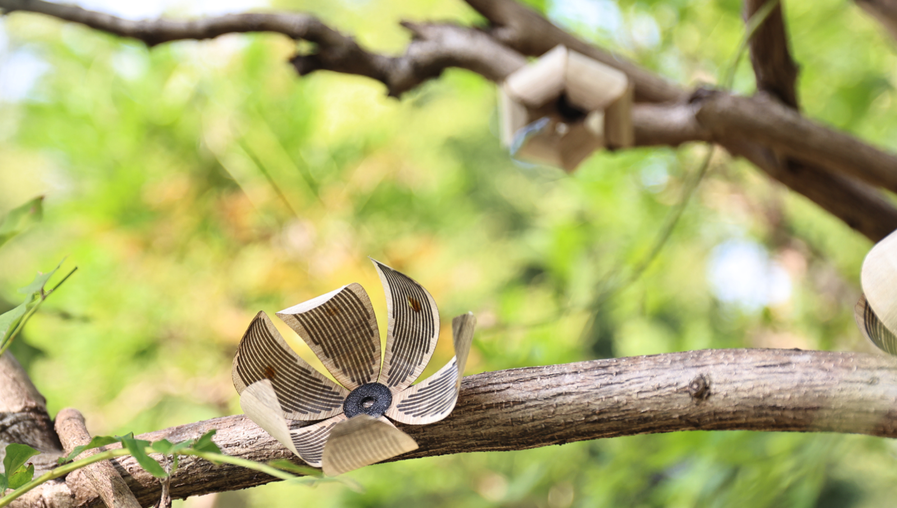

TH-Wood
April 2025
Guanyun Wang, Chuang Chen, Xiao Jin, Yulu Chen, Yangweizhe Zheng, Qianzi Zhen, Yang Zhang, Jiaji Li, Yue Yang, Ye Tao, Shijian Luo, Lingyun Sun*
Wood has become increasingly applied in shape-changing interfaces for its eco-friendly and smart responsive properties, while its applications face challenges as it remains primarily driven by humidity. We propose TH-Wood, a biodegradable actuator system composed of wood veneer and microbial polymers, driven by both temperature and humidity, and capable of functioning in complex outdoor environments. This dual-factor-driven approach enhances the sensing and response channels, allowing for more sophisticated coordinating control methods. To assist in designing and utilizing the system more effectively, we developed a structure library inspired by dynamic plant forms, conducted extensive technical evaluations, created an educational platform accessible to users, and provided a design tool for deformation adjustments and behavior previews. Finally, several ecological applications demonstrate the potential of TH-Wood to significantly enhance human interaction with natural environments and expand the boundaries of human-nature relationships.
Publication: ACM CHI Conference on Human Factors in Computing Systems 2025， Full Paper (Honorable Mention)